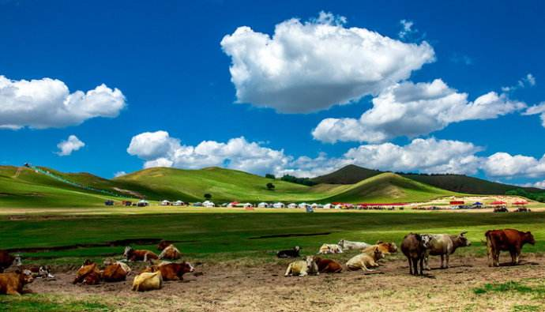
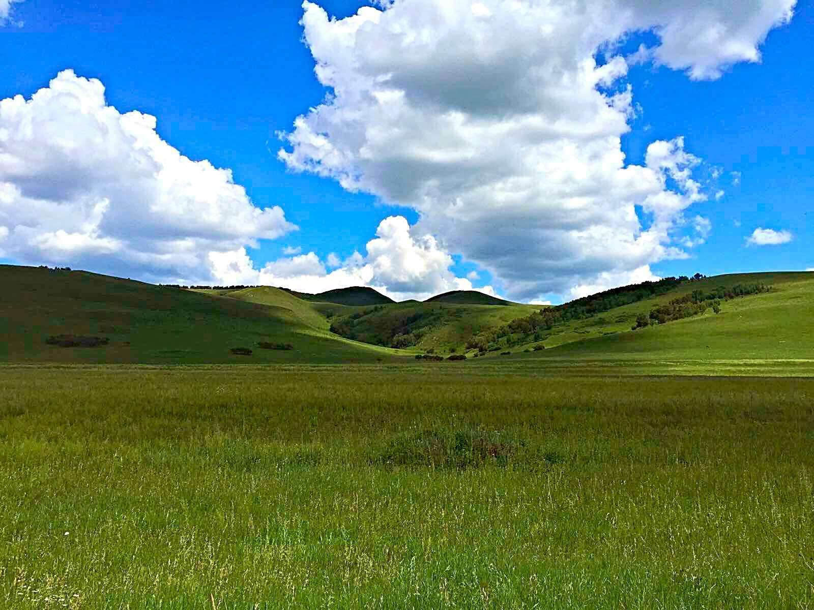
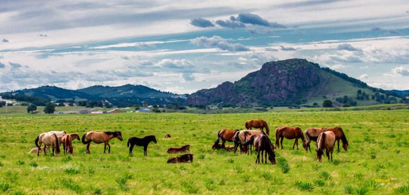
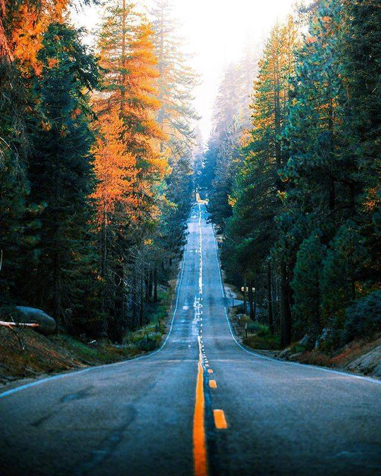

乌兰布统

乌兰布统大草原是避暑胜地。它位于内蒙古赤峰市克什克腾旗西南部，距离北京只有300多公里，是离北京最近的草原，有“北京后花园”之称。它也曾是清朝皇家木兰围场区，与河北木兰围场县的塞罕坝林场隔河相望。
7月，正是炎炎夏季，但对于草原来说，此时正是绿草如茵、百花争艳的好季节。对于一个不是土生土长的草原人来说，都会期待那种天苍苍野茫茫的草原景象，于是小编就推荐一个避暑圣地乌兰布统草原给大家。
乌兰布统为蒙语，汉语的意思是红色的坛形山，属丘陵与平原交错地带，既有连绵起伏的山丘，又有平原的开阔。这里森林和草原有机结合，兼具雄奇与秀美，既具有南方优雅秀丽的阴柔，又具有北方粗犷雄浑的阳刚。 乌兰布统大草原自然风景优美，翠绿的草原，蓝蓝的天空、幽静的白桦林，与散落在辽阔草原上成群牛羊和蒙古包构成了一幅绝美的画面。这里不仅草美，水也很美，有滦河源头、金莲花滩等几万亩湿地，真正是水草丰美之地。 漫步于草原，不管你是在山上，还是在山下，不管你是在草丛中，还是在湖畔，你都能看到满眼翠绿、繁花似锦，感受到泥土的气息，体会一种宁静的，不喧哗、零距离、很真实的美。
乌兰布统大草原有深厚的人文历史，这里有因康熙皇帝指挥清军大战葛尔丹而著称于世的古战场，有纪念康熙皇帝舅父佟国纲将军的泡子与墓葬，有清军十二座连营遗迹。这里民风纯朴，民族风情浓郁，热情好客的草原人会把您请进蒙古包，捧出醇香的奶酒，献上洁白的哈达。 乌兰布统大草原范围涵盖了将军泡子、公主湖、桦木沟、蛤蟆坝、影视基地、五彩山、象群山、夹皮沟、野鸭子湖、盘龙峡谷等景点，尤其是其以迷人的欧式草原风光，成为中外闻名的影视外景基地。
乌兰布统草原旅游四季皆宜，处处皆景。春天，绿草如茵；夏季，百花齐放；秋季，层林尽染；冬季，银装素裹。特别是夏天，6月至8月是游览草原最美的季节，青草悠悠、野花遍地，最能感受“天苍苍、野茫茫，风吹草低见牛羊”的景象！ 大自然的鬼斧神工造就了多姿多彩、如诗如画的乌兰布统大草原。因此，乌兰布统大草原成了广大游人的避暑圣地，成了摄影家的乐园，成了著名的影视外景基地，成了滑雪爱好者的天堂。 7月，乌兰布统大草原是水的源头，云的故乡，花的世界，林的海洋，蓝天、白云、绿草、湖泊、羊群，美不胜收，能让你见识最美丽的大草原。人生中总要去一次乌兰布统，出发吧，去最美草原避暑、骑马、赏花、欢笑……感受清凉一夏
